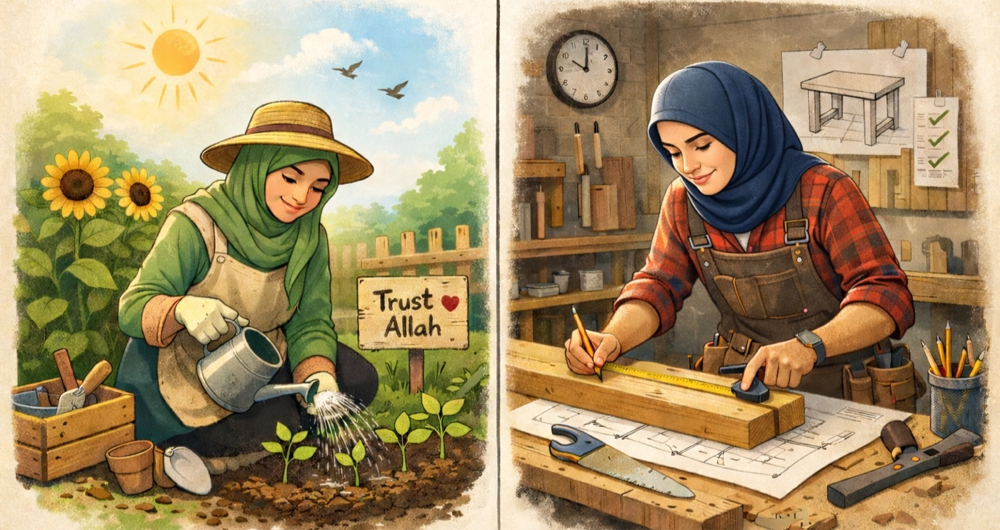
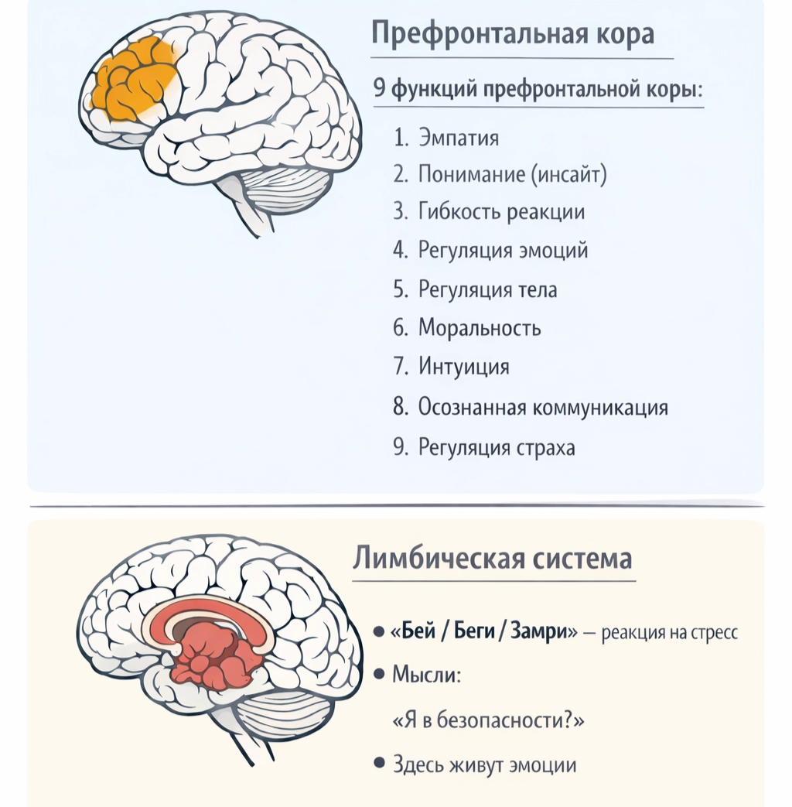

Я поработала с более чем 150 женщинами, которые хотят научиться полностью доверять Аллаху. И со временем начала замечать определённые закономерности. Поделюсь с Вами этими закономерностями.
Многие женщины живут в культуре постоянного достигаторства: контроль, внутреннее напряжение, страх ошибки и ощущение, что их ценность как личности ставится под вопрос каждый раз, когда они не достигают результата.
Но ислам предлагает совершенно другую модель действий.
Ислам предлагает - Культуру Бараката, вместо Культуры Достигаторства.
Давайте разберёмся как это работает:
Исходя из закономерности, которую я заметила при работе с клиентками, я поделила мышление женщин на 2: мышление чертёжницы и мышление садовницы.

🪚 Мышление Чертёжницы
Чертёжница работает так:
- у неё есть точный план
- она контролирует процесс
- она ожидает конкретный результат
Если она делает стол, то результат должен быть именно таким, как в чертеже.
Проблема такого мышления в жизни: женщина начинает верить, что она полностью отвечает за результат и процесс.
🌱 Мышление Садовницы
Садовница работает по-другому. Она:
- сажает семена
- поливает
- заботится о почве
- создаёт условия
Но она не контролирует сам рост. Потому что рост зависит от:
- солнца
- дождя
- времени
- природы
Поэтому мышление садовницы звучит так:
Я делаю своё дело хорошо, но результат не зависит от меня. Она фокусируется не на результате, а на том, как хорошо она сделала свою работу.
Почему многим людям сложно доверять Аллаху
Исходя из закономерности, которую я заметила, проработав с более чем 150 женщинами, их запрос звучал примерно так:
«Я понимаю, что должна доверять Аллаху, я знаю это умом. На словах я говорю: "Я доверяю Аллаху", но внутри тревога. Я всё пытаюсь контролировать и тревожусь».
- Перед тем как перейти к Духовному аспекту Доверия («Тазкие») - мы начинаем с Тела.
Если тело не допускает Доверие, то мы не перейдём на следующий уровень.
Почему мозг не даёт нам доверять
Я объясняю клиенткам простую вещь: наш мозг - мощная система, но у него есть ограничения. За самоконтроль, доверие, осознанность и морально правильные решения отвечает префронтальная кора мозга. Это часть мозга, отличающая нас от животного.

Но её ресурс ограничен. Словно в неё зашита шкала от 0 до 100. Она истощается из-за:
- дисбаланса Нейромедиаторов (Дофамин, Ацетилхолин, ГАМК, Серотонин)
- недосыпа (если Вы не выспались, считайте что ушло 60%)
- социальных сетей (только 15 минут скроллинга - уже −20%)
- информационной перегрузки, большого количества задач
- подавления эмоций, вместо проживания эмоций
А когда у Вас Стресс - префронтальная кора вовсе отключается на 0.
Когда этот ресурс заканчивается, управление начинает брать лимбическая система, которая отвечает за:
- страх
- импульсивность
- тревогу
И в таком состоянии женщине очень трудно чувствовать доверие Аллаху, потому что на Физическом уровне её префронтальная кора перегружена.
Давайте на примере посмотрим, как мы решили проблему моей клиентки Асем - с помощью Нейрокоучинга и Очищения Нафса по воле Аллаха.
Моя клиентка Асем (имя заменено на другое) пришла с запросом:
- Хочу научиться доверять Аллаху, но постоянно чувствую напряжение и тревогу, хотя на словах вроде доверяю.
Мы начали с состояния её нервной системы:
- посмотрели, какое строение мозга у неё по рождению (у неё был дофаминовый тип строения мозга); выяснили, что есть дисбаланс Нейромедиаторов, потому что нейромедиатор ГАМК (который отвечает за чувство покоя) - в МИНУСЕ. Привели её ГАМК в норму, альхамдулиллях;
- разгрузили префронтальную кору;
- привели в порядок уровень её кортизола (гормона стресса) через следование её природным биоритмам по сунне Пророка Мухаммада ﷺ;
- разобрались с её убеждениями из прошлого (подросткового возраста, детства и т.д.) - исправили их. Застрявшие чувства вытащили из тела. Научились работать с её каждодневными эмоциями.
- Тем самым мы убрали Тревожность на уровне тела.
Затем мы начали работать со страхами (нафсом), которые ослабляют доверие к Аллаху: страх будущего, страх потерять контроль, страх не реализоваться.
- Тем самым мы убрали страхи, которые ослабевают Доверие.
Затем мы приступили к Тазкие - Очищению Нафса.
Также она начала внедрять в свою жизнь мой «Список Действий Бараката» - который я создала, исследуя Коран и Сунну. И который применяю каждый день в своей жизни, чтобы достигать не через достигаторство, а через баракат Аллаха.
Она заметила, что выученная тревожность ушла, она чувствует себя намного спокойнее, её мышление полностью поменялось на Таваккуль, и она уже не хочет жить как раньше, поняла, как это работает, и кайфует от чувства Доверия Аллаху. Помимо этого, её отношения с мужем улучшились, она стала делать меньше - но результат был такой, как будто она работала над этим 8–10 часов в день; ей предложили безвозмездный грант для её бизнеса, который очень редко получается выиграть - деньги она вложила в бизнес, тем самым ей удалось в 2 раза вырасти в доходе.
Передаётся в хадисе кудси:
«Если раб приблизится ко Мне на пядь - Я приближусь к нему на локоть…»
Последняя ступень, которой я сегодня с ВАМИ ПОДЕЛЮСЬ (так как статья уже слишком длинная) - это ступень номер 7. И дальше у Вас будет возможность зайти на СПРИНТ по очищению НАФСА, чтобы проделать эту работу с собой.
«Я создал джиннов и людей для поклонения Мне»
Аллах в Коране раскрывает смысл нашего создания
Но большинство людей смотрят на этот аят поверхностно. Аллах говорит:
«Я создал джиннов и людей только для того, чтобы они поклонялись Мне»
Коран, 51:56И многие понимают это так: 👉 «Нужно просто молиться, поститься и делать обязательное». Но это только часть смысла.
Что на самом деле означает «поклонение»?
Учёные объясняли, что ‘ибада (поклонение) - это:
всё, что любит Аллах и чем Он доволен - из слов, дел и состояний сердца.
Это значит:
- твоя работа может быть поклонением
- твои таланты могут быть поклонением
- твоя реализация может быть поклонением
Деньги и удовлетворение приходят тогда, когда ты на своём месте.
Всевышний дал каждому из нас таланты. Уникальные. Только твои.
Представь, что ты всю жизнь пытаешься плыть против течения. Устаёшь. Злишься.
Вот что такое твои таланты. Это твоё течение. Когда используешь свои сильные стороны, усиливаешь то, что уже сильное - реализовываться легко.
Посмотрим на историю Абдуррахмана ибн Ауфа. Когда он совершил хиджру и пришёл в Медину, у него не было ничего. Ему предложили помощь, имущество, даже разделить бизнес. Но он ответил:
«Покажи мне рынок»
Что это значит?
Он понимал свои сильные стороны. Он знал, где его место. Он не ждал - он начал действовать через свой дар.
Он не стал:
- копировать других
- идти туда, где «престижно»
- ждать идеальных условий
Он пошёл туда, где:
- его сильные стороны могли служить людям
И что произошло?
- Аллах открыл ему ризк
- его торговля стала благословенной
- он стал одним из самых богатых сподвижников
Но самое важное: его богатство стало формой поклонения. Он раздавал:
- караваны ради Аллаха
- огромные суммы на пути Аллаха
Я долго плыла против течения
Делала то, что «надо». То, что «приносит деньги». Внешне всё было правильно. Но внутри… ощущение, что живу не свою жизнь.
Тогда я решила узнать себя лучше - я прошла диагностику своих талантов. Вот такие у меня оказались таланты:
Мой ТОП-1 талант: Визионер. Я вижу потенциал в человеке раньше, чем она сама его замечает. Я чувствую маркет, то, куда движется мир. Поэтому мне легко подсказать своим клиенткам, где их способности будут ценны и нужны миру. Это у меня получается натурально, это моя природа.
Мой второй талант: Стратег. Я не просто вижу «куда». Я сразу вижу как.
Мой третий и четвёртый таланты: Ментор, Изобретатель. Я чувствую людей, я умею поддержать, люди рядом со мной растут, мне нравится создавать что-то новое, уникальное для каждого клиента.
Но вот что я поняла позже
Узнать свои таланты - это только первый шаг. Потому что каждый талант имеет две стороны.
Светлую - когда талант служит Аллаху (то, изначально для чего нам дан этот
талант).
Теневую - когда талант служит Нафсу (ради Эго).
Самое коварное - снаружи они выглядят одинаково.
Посмотрим на теневую сторону моих талантов:
Визионер в тени - видит потенциал в других, вдохновляет всех вокруг, но себя обесценивает. Строит красивые планы - но не действует. Мечтает, но не верит, что это возможно именно для неё.
Стратег в тени - всё планирует, всё просчитывает - но никогда не начинает. Ждёт идеального момента. Или контролирует всё и всех - потому что не доверяет Аллаху.
Ментор в тени - отдаёт всем вокруг и забывает о себе. Помогает другим расти - пока сама стоит на месте. Теряет себя в заботе о других.
Изобретатель в тени - начинает всё новое и не заканчивает. Скачет с идеи на идею. Перфекционизм. Боится, что её уникальный подход не примут - и прячется за чужими шаблонами.
Все мои таланты были при мне. Но я применяла их из позиции раба Нафса.
🙏 И только когда я начала работать с Нафсом через Тазкию - что-то изменилось. Те же таланты. Та же я. Но другое намерение. Другое место внутри. И тогда появился баракат. Работа перестала истощать - она начала наполнять.
Это и есть разница между талантом на пути Нафса и талантом на пути раба Аллаха.
Именно поэтому с каждой клиенткой мы не просто определяем таланты. Мы смотрим - из какого места она их применяет. И через Тазкию переводим из позиции Нафса в позицию раба Аллаха.
Когда ты на своём месте и делаешь своё - каждое действие становится поклонением, и Ризык приходит легко.
Я бы хотела рассказать ещё больше, но для одной статьи уже достаточно много контента - иначе получилась бы целая книга, и ты бы, скорее всего, не смогла усвоить это за раз.
Итак: ты узнала о 3 ступенях очищения Нафса из 10.
- Доверие
- Любовь к Аллаху и Отношения
- Предназначение и Ризык
💭 Честный вопрос
Ты читала. Что-то внутри сдвинулось. Может быть, узнала себя в историях. Но что будет завтра утром? Ты проснёшься.
И всё, что сегодня сдвинулось, - тихо уйдёт на фон. Не потому что ты не хочешь меняться.
А потому что между пониманием и изменением - пропасть
И эта пропасть называется - практика.
Я знаю это на себе. Я годами понимала. Читала. Слушала лекции. Копила инсайты. И оставалась на том же месте. Пока не начала делать. Конкретно. По шагам.
«Любовь к Аллаху через
Очищение Нафса»
Именно поэтому я собрала это в 5-дневный Спринт - который ты можешь проходить в своём темпе, уроки сохраняются на 3 месяца. Начать можно сразу после оплаты (тебя автоматически добавят в закрытый телеграм-канал).
Также доступна оплата переводом KASPI.